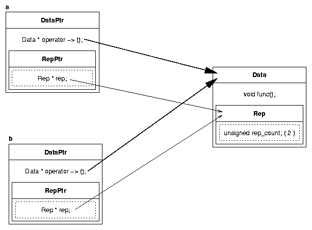
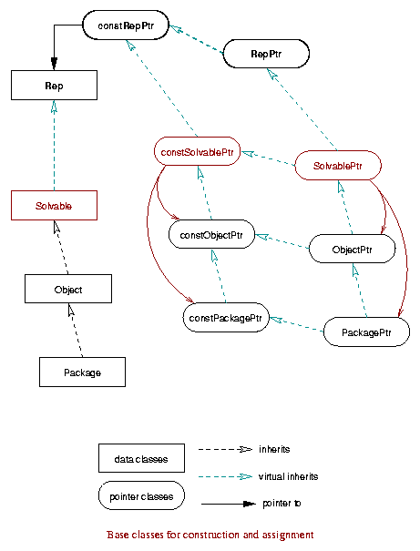

The idea is to make pointers into (dynamically allocated) real objects. Every time a
pointer is copied, its operator= or copy constructor is called, so the number of
outstanding references to an object is tracked in a single data object shared by multiple
counted pointers. When a pointer goes out of scope, its destructor is called and the refernce
count is accordingly decremented. When the count goes to zero, the data object is deleted.
The only trick is to take control of invocations of the -> operator on an
object using operator overloading.
|  |
DataPtr a( new Data ); DataPtr b = a; ... b->func(); // invokes Data::func() |
There are various ways to implement pointer classes. The approach described here, and currently used for data objects like Packages, is for shure the most simple one. A data object like a Package is created once and explicitly shared between all pointer objects that reference it. I.e. no copy on write is performed. Changes to the data object will be immediately visible at all locations.
liby2utilclass Rep |
Base for data classes. Provides the reference counter. |
class constRepPtr |
Base for pointer classes providing const Rep *. Manages reference
counting. |
class RepPtr |
Base for pointer classesproviding Rep *. Manages reference
counting. |
#include <y2util/RepDef.h> |
Provides a set of macros to create data and pointer classes. |
y2util/RepDef.hThe macros provided by y2util/RepDef.h ease creating a hierarchy of data and
pointer classes like for example:
|  |
If you wonder why there are two pointer classes constDataPtr and
DataPtr used, keep in mind that a DataPtr is nothing but a
Data *. Thus a const DataPtr is a Data *const.
While a const Data * is provided by constDataPtr.
| Confused? Throughout your code | |
| use | instead of |
constDataPtr | const Data * |
DataPtr | Data * |
const constDataPtr | const Data *const |
const DataPtr | Data *const |
Construction, assignment, and implicit conversion on pointer classes will follow the
same rules as with traditional pointers. And like traditional pointers, you'll have to test
for != NULL before trying to access the data object using the
-> operator.
A little bit different is the situation, if you want to cast up the pointer class
hierarchy. Something like dynamic_cast<PackagePtr>(ObjectPtr) will not
necessarily return the expected result. It's possible that an ObjectPtr
references a Package object, whithout in fact being a
PackagePtr.
This is solved by being able to construct a pointer class, with respect to constness,
out of the inherited base pointer class (the bottommost class). You can create a
constPackagePtr out of a constSolvablePtr or any pointer class
that inherits it (constObjectPtr, SolvablePtr, and
ObjectPtr). The same way a PackagePtr can be created out of any
pointer class inhertiting SolvablePtr (ObjectPtr). If the base
pointer class does not actually reference a Package object, the created
PackagePtr will be NULL.
In the example above the base class is class Solvable, and that is how
you would create it:
#include <y2util/RepDef.h> /////////////////////////////////////////////////////////////////// // Define classes constSolvablePtr and SolvablePtr /////////////////////////////////////////////////////////////////// DEFINE_BASE_POINTER(Solvable); | SolvablePtr.h |
#include <iosfwd>
#include "SolvablePtr.h"
class Solvable : virtual public Rep {
REP_BODY(Solvable);
// The rest is up to class Solvable...
public:
Solvable() {}
virtual ~Solvable() {}
...
virtual std::ostream & dumpOn( std::ostream & str ) const;
};
| Solvable.h |
#include <iostream>
#include "Solvable.h"
///////////////////////////////////////////////////////////////////
// Implementation of constSolvablePtr and SolvablePtr
///////////////////////////////////////////////////////////////////
IMPL_BASE_POINTER(Solvable);
// The rest is up to class Solvable...
std::ostream & Solvable::dumpOn( std::ostream & str ) const {
...
return str;
}
| Solvable.cc |
As you can see, it's quite simple. Note that it's always the name of the data class that's used as macro argument.
The pointer class definition is kept in a separate
header file SolvablePtr.h. Including it in your source serves the same purpose
as a forward declaration class Solvable;. You may use the pointer classes,
but can't access class Solvable.
The REP_BODY macro serves as hook to overload or introduce methods that
may become necessary. Currently just overloads Rep::rep_name() to return the
class name "Solvable".
As there is an std::ostream::operator << provided for class
Rep, that simply calls Rep::dumpOn, overloading
Rep::dumpOn is a simple way to realize a std::ostream::operator
<< for class Solvable.
Creating derived classes is almost the same as creating base classes. Just two
different macros DEFINE_DERIVED_POINTER and IMPL_DERIVED_POINTER
are needed to define and implement the pointer classes. Macro arguments for both macros
are:
NAME: The name of the data class.
FROM: The name of the data class it is derived from.
BASE: The name of the base data class (the bottommost class)
#include "SolvablePtr.h" /////////////////////////////////////////////////////////////////// // Define classes constObjectPtr and ObjectPtr /////////////////////////////////////////////////////////////////// DEFINE_DERIVED_POINTER(Object,Solvable,Solvable); | ObjectPtr.h |
#include <iosfwd>
#include "ObjectPtr.h"
#include "Solvable.h"
class Object : virtual public Rep, public Solvable {
REP_BODY(Object);
// The rest is up to class Object...
public:
Object() {}
virtual ~Object() {}
...
virtual std::ostream & dumpOn( std::ostream & str ) const;
};
| Object.h |
#include <iostream>
#include "Object.h"
///////////////////////////////////////////////////////////////////
// Implementation of constObjectPtr and ObjectPtr
///////////////////////////////////////////////////////////////////
IMPL_DERIVED_POINTER(Object,Solvable,Solvable);
// The rest is up to class Object...
std::ostream & Object::dumpOn( std::ostream & str ) const {
...
return str;
}
| Object.cc |
And the same way Object was derived from Solvable,
Package will be derived from Object:
#include "ObjectPtr.h" /////////////////////////////////////////////////////////////////// // Define classes constPackagePtr and PackagePtr /////////////////////////////////////////////////////////////////// DEFINE_DERIVED_POINTER(Package,Object,Solvable); | PackagePtr.h |
#include <iosfwd>
#include "PackagePtr.h"
#include "Object.h"
class Package : virtual public Rep, public Object {
REP_BODY(Package);
// The rest is up to class Package...
public:
Package() {}
virtual ~Package() {}
...
virtual std::ostream & dumpOn( std::ostream & str ) const;
};
| Package.h |
#include <iostream>
#include "Package.h"
///////////////////////////////////////////////////////////////////
// Implementation of constPackagePtr and PackagePtr
///////////////////////////////////////////////////////////////////
IMPL_DERIVED_POINTER(Package,Object,Solvable);
// The rest is up to class Package...
std::ostream & Package::dumpOn( std::ostream & str ) const {
...
return str;
}
| Package.cc |